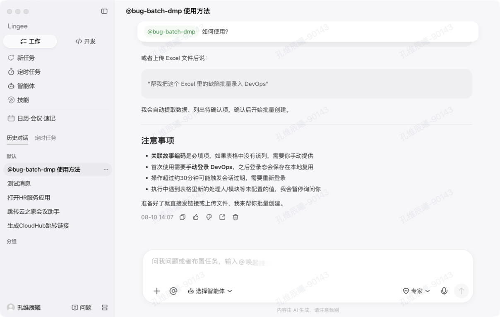

用 AI 做体验走查
让 AI 给产品做个设计走查。
 金蝶灵基 · 走查报告
金蝶灵基 · 走查报告
📄 走查报告
AI速记 走查报告
16 个问题 · 代码扫描 479 处硬编码 · Figma 还原对比 · 选择器级定位会议室+对话模块 走查报告
11 个问题 · 代码扫描 521 处硬编码 · Figma 还原对比 · 文件级详情📄 有源代码的走查报告
当 AI 同时拥有代码访问权限，可以将问题精准定位到状态变量和文件，输出开发可直接使用的修复方案。
三步开始
下载
→ 下载 Skill从 GitHub 下载 Skill 文件，放到 AI 工具目录（.qoder/skills/ 或 .claude/commands/）。
让 AI 读取 Skill
提示词参考：
请读取 .qoder/skills/ai-check-tool/SKILL.md，理解这个走查工具的完整能力和使用方式，然后告诉我已准备就绪。
和 AI 描述需求
复制这段，删掉没有的项即可：
帮我走查一下灵基日历这个模块。 设计规范：https://lingee.design 组件库（选填）：https://components.lingee.com Figma 设计稿（选填）：https://figma.com/file/xxx 项目代码位置（选填）：当前目录 asar 路径（选填）：/path/to/app.asar（Electron 项目可填） 重点页面（选填）：会议首页、列表页 重点维度（选填）：窗口缩放、颜色间距、Token 硬编码
覆盖 11 个体验维度
暗黑模式
检查暗色主题下的颜色、对比度、可读性
切换暗黑模式后，检查硬编码色值在深色背景下的对比度与可读性

国际化
多语言文本长度变化对布局的影响
中文翻译为英文后文本膨胀 30–80%，检查按钮截断、Tab 溢出、卡片破损
无障碍
对比度、替代文本、ARIA 属性检查
检查 alt 文本、aria-label、焦点环可见性、Tab 导航顺序与屏幕阅读器兼容性
Token 绑定
代码扫描，检测硬编码值是否应改用设计变量

从授权应用到输出报告
读取设计规范 Browser Agent
AI 访问设计规范站，提取间距、字号、圆角、按钮尺寸等数值作为走查基准。
代码扫描 asar extract + token-scan
解包应用代码，批量检查颜色、圆角、字号是否使用了设计变量，按模块统计覆盖率。可与截图并行。
界面截图 & 交互 Computer Use
AI 操控桌面打开应用，截取默认窗口、窄窗口、全屏等多种状态，并进行基础交互操作（点击、输入、下拉等）截图取证。
Figma 设计稿对比 Figma API 可选
如果提供了 Figma 链接，通过 API 拉取设计稿截图，与实际页面逐项对比差异。
输出走查报告 HTML
将所有发现按严重/中等/轻微分级，生成带 Tab 切换的 HTML 报告，包含文件级定位。
当前工具的优势与局限
响应式 & 布局问题发现率很高。AI 系统地测试多种窗口尺寸，不遗漏截断、溢出等问题，人工走查经常漏。
规范偏差检查稳定可复现。逐条对照 Token 校验，不受主观影响。
代码扫描发现人眼看不到的问题。批量找出未绑定设计变量的硬编码，精准定位到模块。
回归验证高效。修复后重跑一遍，之前的问题是否还在一目了然。
视觉美感和深层业务逻辑仍需人工判断。颜色搭配、复杂多步骤流程等需要设计直觉的领域，AI 目前作为辅助。
下一步方向：AI 走查 + 人工审核。 AI 负责批量扫描，人工聚焦设计意图和业务逻辑 — 两者结合，效率可提升数倍。
纯视觉走查工具对比
AI 走查和传统 Design Review 不是替代关系，而是互补。了解两者的定位和适用场景，选择更高效的走查方式。